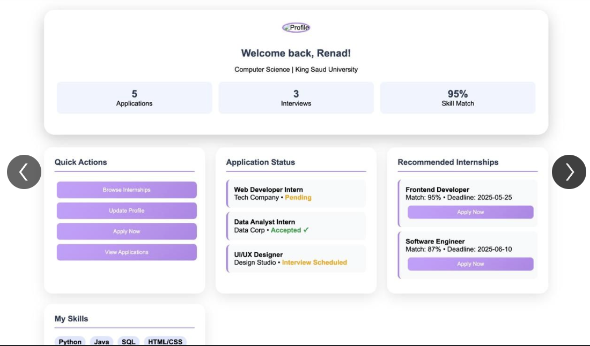
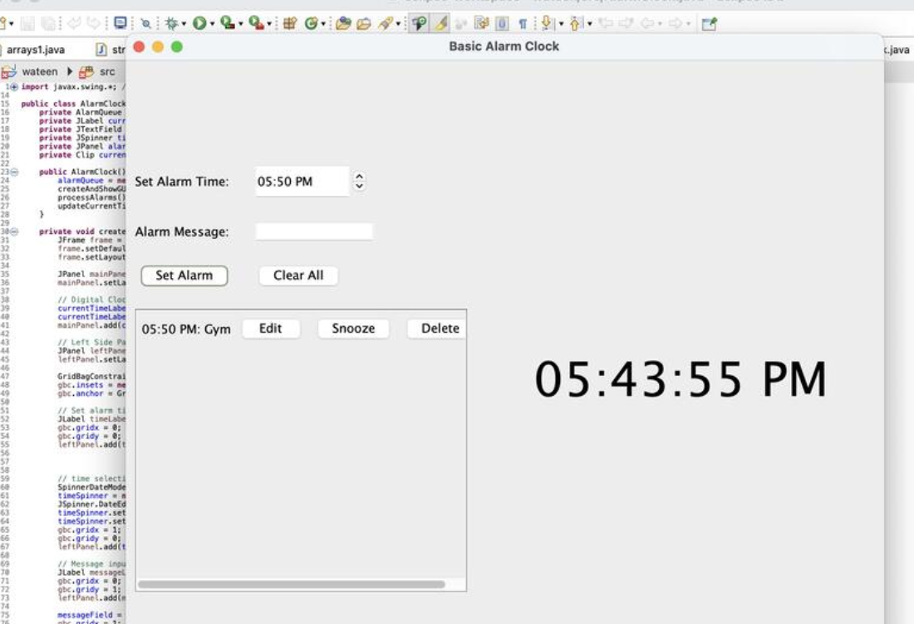
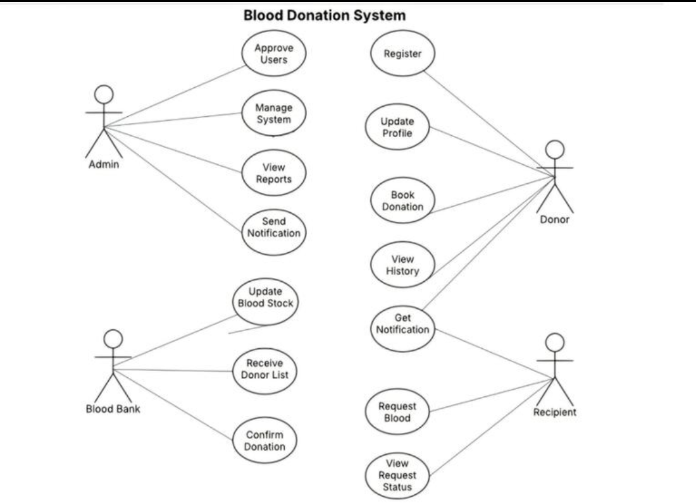
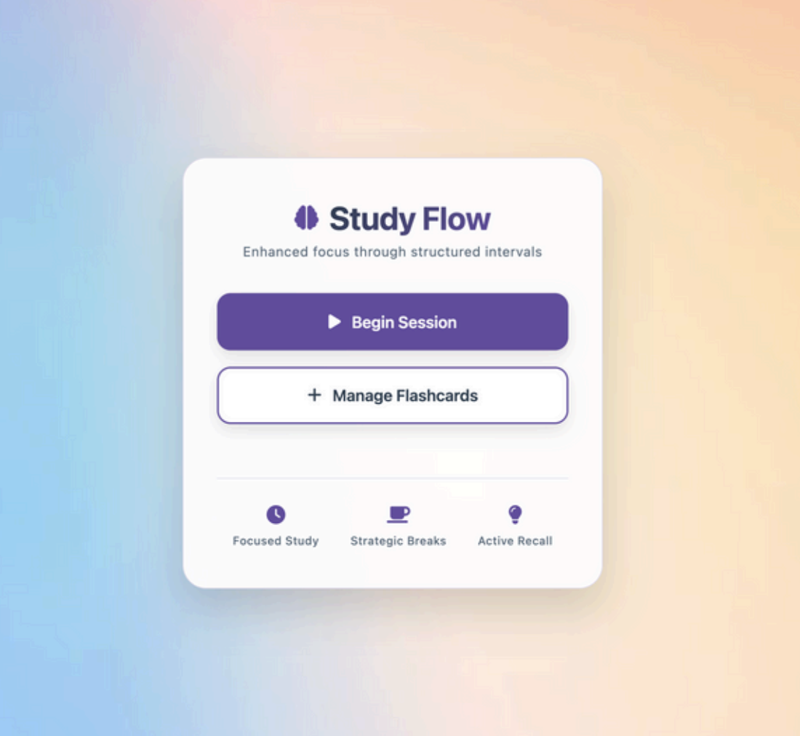

My Projects

Internship Matching System
A web platform connecting students with local companies for internships based on their skills. Built with HTML, CSS, JSP, and SQL database.

Alarm Clock App
A Java-based desktop application that lets users set and manage multiple alarms. Simple UI and object-oriented design.

Blood Donation Management System
A system to manage blood donors, requests, and inventory. Followed software engineering principles and an incremental model.

Pomodoro with Recall Section
A productivity timer that alternates work and break intervals, plus a recall section.